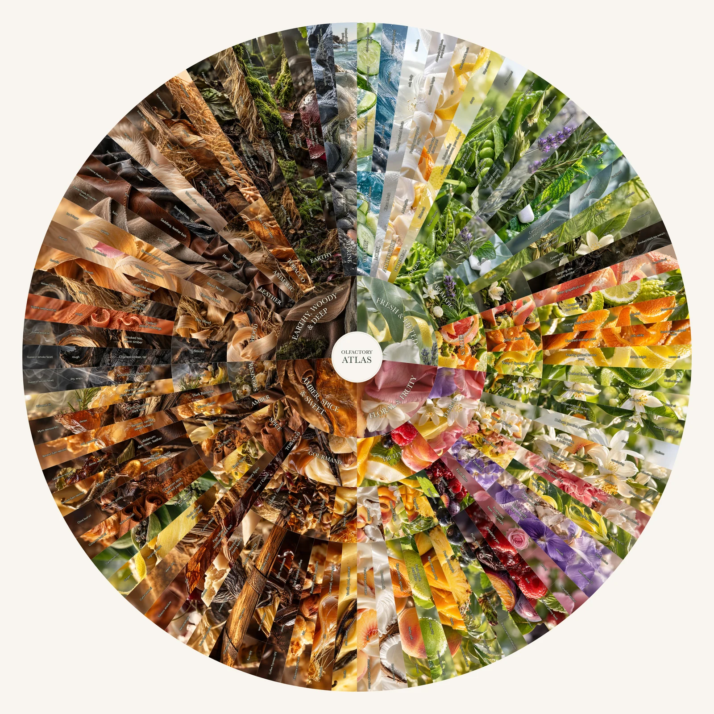

A photographic scent guide
A vocabulary for
what you smell.
Move from a broad impression to something familiar: crushed herbs, pencil shavings, soft suede, warm resin. An illustrated companion for exploring a scent, one association at a time.

20 families · 82 scent possibilities · 130 compositions

The idea
Recognition before precision.
Start with what seems familiar, then follow the wheel outward. Smell comparisons suggest a more specific description; feel words add qualities such as dry, creamy or crisp. You can stop wherever the words fit.
The wheel is a selective guide, not an exhaustive classification. Material references illustrate scent facets; they do not identify ingredients in the perfume you are smelling.
The making
Photographs, structure, language.
AI-generated imagery evokes each scent route. Exact vector geometry and editable labels keep the structure separate from the pictures. The exhibit uses pre-rendered tiles for smooth zooming and panning.